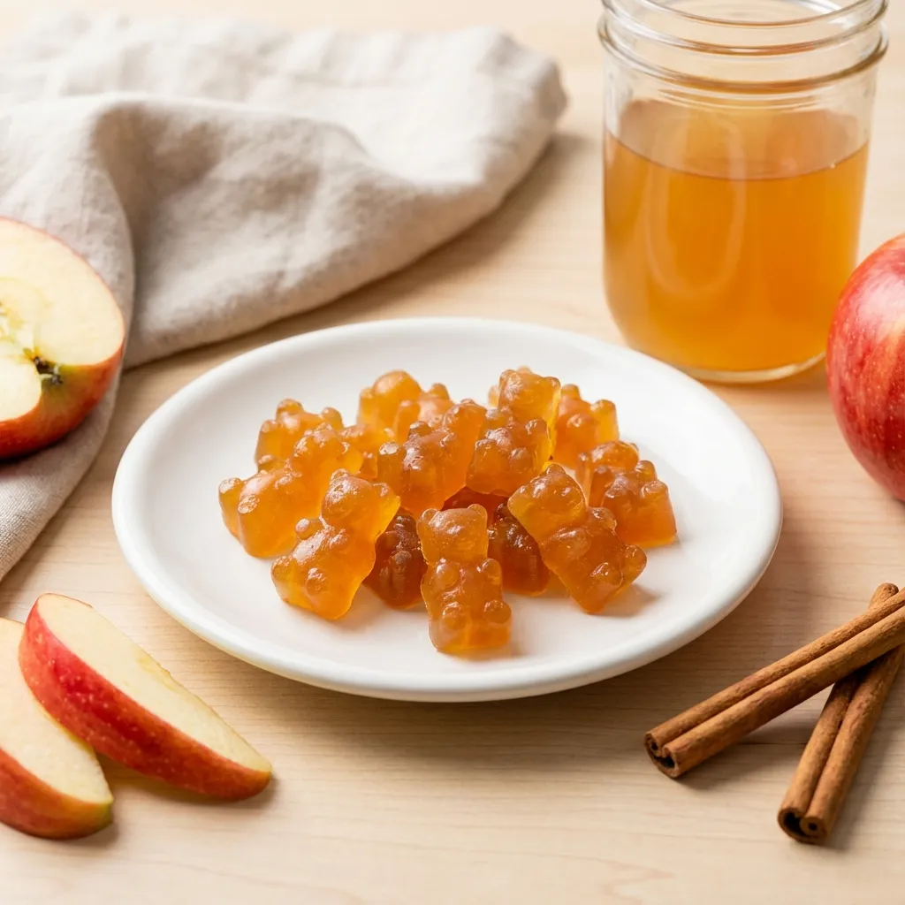
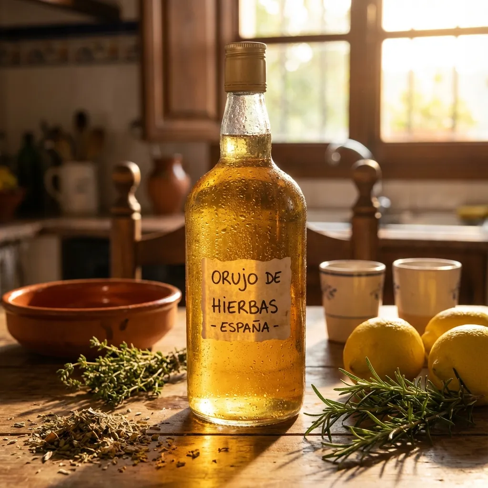
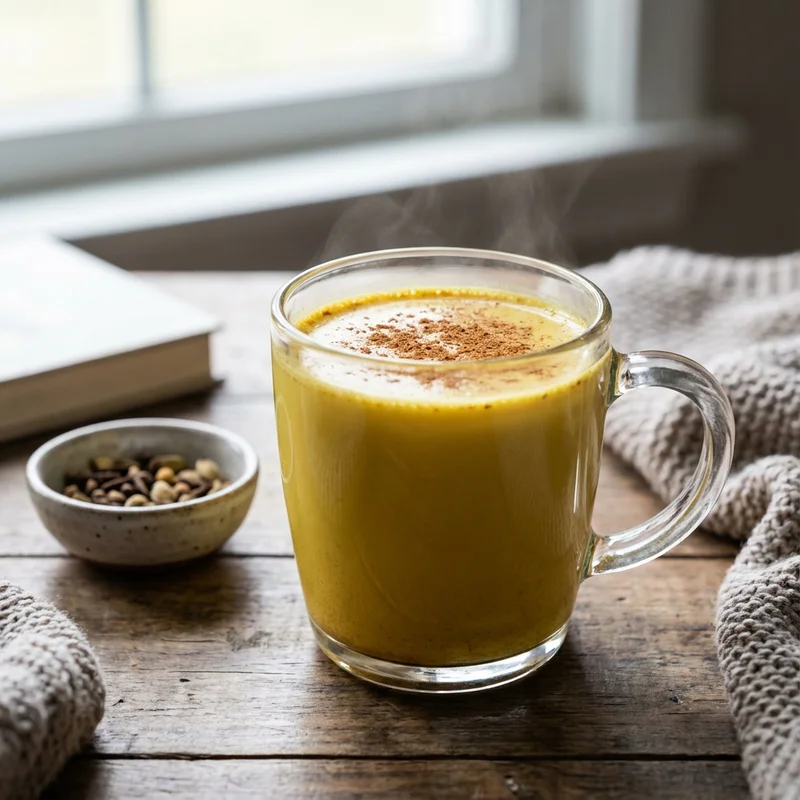

🍳 Recetas Saludables
Descubre recetas nutritivas y deliciosas que te ayudarán a crear platos saludables con ingredientes naturales. Alternativas conscientes a productos procesados altos en azúcar y grasas malas.
Recetas con Gochugaru
Chile coreano en copos para platos saludables con sabor picante único. 3 recetas completas paso a paso...
Leer más →Recetas con Fécula de Maíz

Espesante natural sin gluten para crear postres saludables, salsas ligeras y rebozados crujientes. 4 recetas...
Leer más →Nucita - Dulce Saludable de Cacahuate

Dulce casero con cacahuate rico en proteína vegetal, grasas saludables y sin azúcares refinados. Receta paso a paso...
Leer más →Chocolates con Almendras Saludables
Clusters de chocolate oscuro con almendras: antioxidantes, grasas saludables y sabor delicioso. Receta casera...
Leer más →Té de Hoja de Morera

Infusión medicinal para control glucémico natural. Ideal para regular azúcar en sangre y mejorar salud metabólica...
Leer más →Gominolas de Vinagre de Manzana

Gomitas funcionales caseras para control de peso y salud digestiva. Receta sin azúcares refinados ni aditivos...
Leer más →Orujo de Hierbas Digestivo

Licor digestivo tradicional español con hierbas aromáticas. Propiedades carminativas y hepatoprotectoras naturales...
Leer más →Shatavari Golden Milk

Leche dorada ayurvédica para equilibrio hormonal femenino. Bebida adaptógena con cúrcuma y especias medicinales...
Leer más →